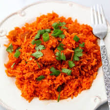

Red Rice

Red Rice is a must-have for any Chamorro Menu. Its a delicous fun way to eat rice.
Some people add peas or bacon bits to the recipe, but this is the simple way to make it.
Ingredients
- 3 cups rice (medium or long grain)
- 1 tbsp Dashida seasoning
- 1 tbsp bacon fat (or sub w/olive oil or veg oil)
- 1/4 tsp black pepper
- 1 tsp chopped garlic
- 4 stalks green onions, sliced
- 1 packet achote powder
- 3 1/2 cups hot water
Steps
- Wash rice thoroughly. Drain excess water.
- Into the pot, add the Dashida, bacon fat, black pepper, garlic,
and achote powder.
- Add green onions
- Carefully pour hot water into the pot. Stir to combine all the ingredients and to dissolve the achote powder and Dashida. the bacon fat will start to melt; don't worry if it doesnt cmpletely melt at this time.
- Turn the rice cooker to the "cook" setting. The only thing left to do is to stir the rice a couple more times. wait acouple of minutes then stir to ensure even mixing after the bacon fat melted. Wait another 5 mins or so and stir once more to ensure the rice at the bottom of the pot is evenly coated with achote coloring.
After stirring the rice for a secound time, leave the rice to cook/steam until done.
- Serve with your favorite meat dish and ENJOY!!!